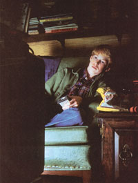
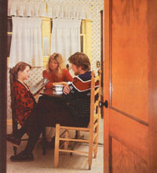

The Family or the television: Which comes first? The choice can be yours.
In 1974, the Denver Post persuaded 25 families with young children to participate in an experiment: Go one month without watching any television. The 15 families that managed to stick with that boob tube blackout reported that, after the initial adjustment, their homes were more peaceful and relaxed . . . the children helped out more (with the dishes, in the garden, etc.) . . . they played together better and played outside more often . . . they became more involved with crafts, puzzles, family games, reading, and model building . . . the parents spent more time on their own projects, such as sewing, woodworking, and reading . . . meals were more leisurely and enjoyable . . . everyone got more sleep . . . they all interacted better, and generally felt much closer as families. It was as if someone had given them all a gift of extra hours in the day.
After the month-long experiment was over, every one of the 15 families resumed its former viewing habits.
That sums it up, doesn't it? Many of us feel that watching television isn't conducive to good family interrelationships. But what's a body to do? The kids want to watch . . . and they'll likely raise Cain if you don't let them. Then too, TV keeps them out of your hair when you're trying to get something done. Besides, you like to watch some programs yourself (everybody deserves a chance to relax sometime, right?). And, finally, there are some worthwhile programs on the tube.
Still, who's in control-you or the TV? Most of us, if we're honest with ourselves, will admit that, more often than we'd like, the TV seems to be in charge. The average American family watches seven hours of television a day; statistics show that TV viewing has become the single most common childhood activity. It has also polled out as the second biggest obstacle to family harmony (behind money, but well ahead of sex).
This article has one purpose: to help people who want to take charge of the family TV. Since most of us probably won't muster the willpower to do so if we're not utterly convinced we should, I'm going to first briefly relate why controlling TV viewing is important. Then I'll move on to the heart of the matter: how you really can take charge, for the good of all.
Most of the following arguments come from Marie Winn's The Plug-In Drug and from Jim Trelease's The Read-Aloud Handbook. Winn's thoughtful, compassionate, and detailed book is full of studies and storiesthe thoughts, struggles, and insights of scores of TV-hooked families. If you want more support, evidence, or ideas concerning this problem, read The Plug-In Drug. Trelease's Read-Aloud Handbook is a guide to get you started on reading stories to your kids. It contains 300 reviews of recommended books and includes a good chapter on excessive television watching, which tells what happened when the Trelease household tried to break television's grip.
Television watching is the major obstacle to literacy and learning in America today. TV demands a short attention span, reading a long one. TV does your thinking and imagining for you; reading develops both thinking and imagination.
But is it certain that those 15,000 hours the average child spends watching the tube in the first 17 years of life (5,000 hours by kindergarten!) do have negative effects?
Well, in 1980 the California Department of Education correlated the scholastic achievement test scores of half a million children with the amount of television they watched. The conclusion? The more time a child spent watching TV, the lower the test scoreregardless of IQ, social background, or study habits.
Television watching is a passive, antisocial experience. Time spent zonked out in front of the tube is time spent not playing: the major occupation of childhood. Through play, children develop their imaginations, practice new skills, and learn self-control (all those sandlot baseball arguments serve a vital socializing purpose). In solitary play, a child learns to enjoy free time: to build independence and a storehouse of self-entertaining skills that can help sustain him or her during life's idle (or troubled) hours.
Television watching decreases the quality of family life . .. not so much from the behavior it promotes as from the behavior it prevents. All those hours in front of the tube are hours spent not learning the skills of ordinary family living-working together, ironing out hassles-that help young people grow in character. They are hours without family conversation and lacking all the sharing, bonding, and learning that such interactions can provide. (Being a passive experience, TV watching can't be considered a family activity, even when the whole clan is glued to the same program.)
Television watching offers the parents short-term benefits but long-term problems. It starts out as a baby-sitter, something to keep the little one busy until supper is ready. It expands to take up more and more hours of the child's day, anesthetizing its small viewer, robbing the child of life experiences. By the time the adults sense what is happening, the kids may be so plugged into the TV that they've turned the grown-ups off. The parents, in turn, may have slowly retreated from active child rearing, failing to socialize and discipline their children.
When the children get older, such hens often come home to roost. Television watching is psychologically addictive. Don't believe that? Try turning it off for a week. Witness the anguished cries and tantrums of your children. Feel your hand reaching-of its own volition-for the dial. You may admit that most of what you see on TV is worthless junk, a waste of your time, a passive escape from life-and one that doesn't satisfy or fulfill you-and yet you want to keep watching it.
What can you do? Some individuals and families actually throw out their TVs to keep from succumbing to them. They go cold turkey-a harsh but effective solution.
You probably don't have to go that far. If you, as parents, firmly believe that controlling TV watching is important for your children's (and your own) sake, you can control it. If you (both of you, if you're a two-parent family) set some rules and stick to them, your children will know you mean it, and they 'll obey. But if both of you aren't committed to control, or if either of you has doubts about being able to regulate your own TV watching, your children will exploit the opening.
Once you've got your own conviction steadfast, though, all you have to do is figure out what limits will work best for your family. Some suggestions:
Probably the simplest-and most often successful-method is no TV Monday to Friday Five days out of seven, shut it down (even if a teacher assigns a program for school). The result? The kids don't have to rush through supper or their homework to get to the tube. They can still enjoy some TV, but they know exactly when. This is the most effective method because it's the most clear-cut and ironclad.
Although Jim Trelease's family adopted this rule, after a few years they decided that each child would be allowed to choose one parent-approved, school-night show a week. While Jim says this policy helped develop his children's discriminatory skills, you're probably better of going five-sevenths cold turkey to begin with. Until you get that weekday hiatus firmly established, you may find it too easy to make "exceptions," "concessions," and "just this times" until, before long, you're back where you started.
Some families limit each child's viewing to one hour a day-a system that's fairly successful at breaking the strength of TV's grip. Some limit viewing to two or three hours a day. Such rules are easily eroded, however, by the pressure to watch "one more" show. Some put the cap on at no TV during weekdays and two hours on weekends.
If you don't really think you'll be able to set down some rules and stick to them, you can try more insidious methods of control. Use a set with such poor reception that no one wants to watch it a lot. Don't leave the TV in the main living room, but keep it in an uninviting space-like a basement-or store it in the closet except when you want to pull it out to view it. Get rid of all your TVs but one: There's a clear correlation between a family's viewing hours and the number of sets it has. At the very least, take all TVs out of your kids' bedrooms!
Whatever plan of action you adopt, you'll have to show some self-control as well. You may not choose to adopt the same viewing restrictions as your children (after all, there are many things adults do in our society that children don't), but if you pig out unrestrainedly on TV, your hypocrisy will ultimately do you in.
And don't expect your children to find lots of healthful, character-developing ways to entertain themselves the day you start turning the TV off. The initial days may be hard ones, filled with wails of protest and gripes of boredom. (Some youngsters have been known to sit and stare for hours at the spot where the family TV was!)
Do expect to spend more time with your children-reading, playing games, listening to music, telling stories, working on projects. Now, this doesn't mean that you have to be their 24-hour-a-day amusement park. Instead, put some of your efforts into helping them start projects they can do themselves, getting them the tools (art materials, library books, a cassette player) they need for their own activities, and teaching them how to entertain themselves. Give them all of your attention-undivided-sometimes and make it clear that, at other times, you need to do your own thing without interruptions. That way you'll keep your own sanity, and your kids will develop some self-reliance. You'll be doing them and yourself a service.
Still not sure you can do it . . . or not sure that you should do it? Then find out for yourself: Do your own one-family Denver experiment. Unhook your home television for a solid month. Then see what happens. See if, after the initial perturbations, your family's lives don't improve. (And write MOTHER and tell us how it works out!)
One thing, though: If you do see improvement, don't just slip back unconsciously into the same old viewing habits when the month is over. Instead, make your viewing choices deliberately. You make the decision; don't leave it to that one-eyed stranger waiting in your living room.
EDITOR'S NOTE: Both The Plug-In Drug and The Read-Aloud Handbook are available from Viking Penguin, Inc., 299 Murray Hill Pkwy., East Rutherford, NJ 07073. Each book costs $6.95 plus $1.50 shipping and handling.
|
 STAFF PHOTOS |
 |
|